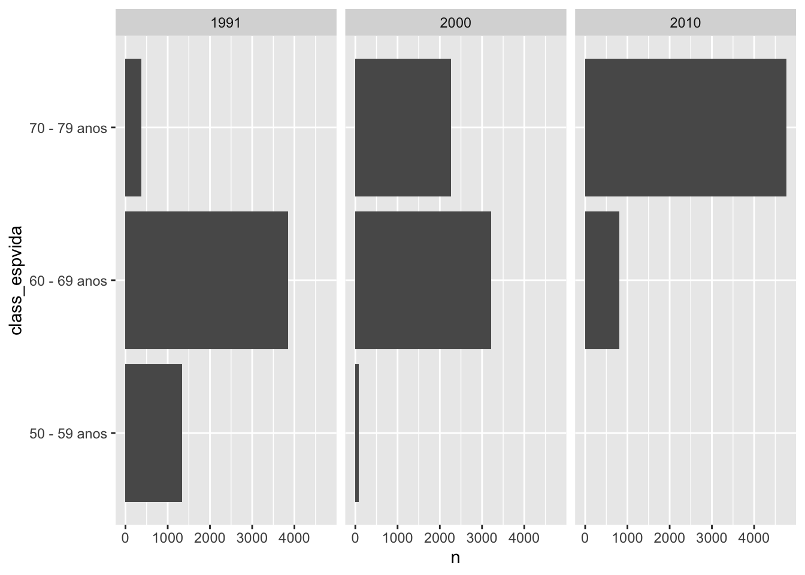
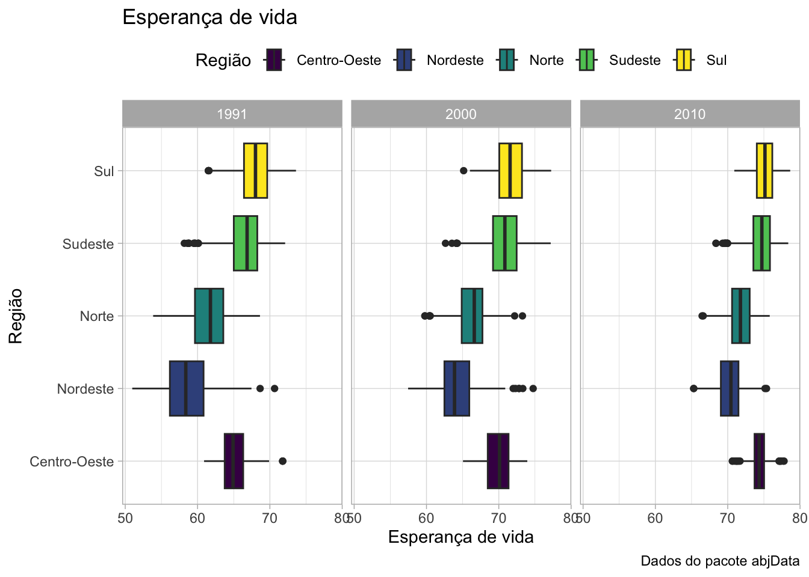
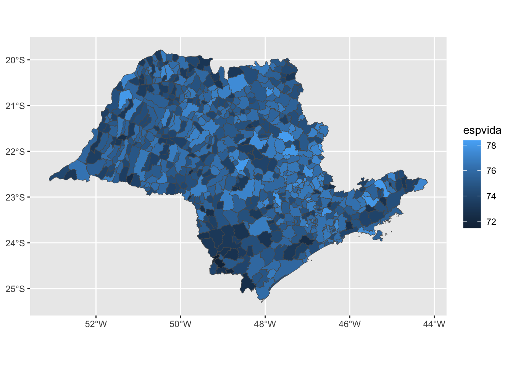

library(tidyverse)Tópico 3 - Manipulação de dados com dplyr
Vamos começar carregando os pacotes que vamos utilizar neste script.
Então podemos importar a base de dados que vamos utilizar:
dados_pnud <- read_csv2("../dados/base_pnud_min.csv")Quais são as informações disponíveis na base?
dicionario_pnud <- read_csv2("../dados/dicionario_base_pnud_min.csv")
dicionario_pnud |> knitr::kable()| sigla | nome_curto | nome_longo | definicao |
|---|---|---|---|
| espvida | Esperança de vida ao nascer | Esperança de vida ao nascer | Número médio de anos que as pessoas deverão viver a partir do nascimento, se permanecerem constantes ao longo da vida o nível e o padrão de mortalidade por idade prevalecentes no ano do Censo. |
| gini | Índice de Gini | Índice de Gini | Mede o grau de desigualdade existente na distribuição de indivíduos segundo a renda domiciliar per capita. Seu valor varia de 0, quando não há desigualdade (a renda domiciliar per capita de todos os indivíduos tem o mesmo valor), a 1, quando a desigualdade é máxima (apenas um indivíduo detém toda a renda).O universo de indivíduos é limitado àqueles que vivem em domicílios particulares permanentes. |
| idhm | IDHM | Índice de Desenvolvimento Humano Municipal | Índice de Desenvolvimento Humano Municipal. Média geométrica dos índices das dimensões Renda, Educação e Longevidade, com pesos iguais. |
| idhm_e | IDHM Educação | Índice de Desenvolvimento Humano Municipal - Dimensão Educação | Índice sintético da dimensão Educação que é um dos 3 componentes do IDHM. É obtido através da média geométrica do subíndice de frequência de crianças e jovens à escola, com peso de 2/3, e do subíndice de escolaridade da população adulta, com peso de 1/3. |
| idhm_l | IDHM Longevidade | Índice de Desenvolvimento Humano Municipal - Dimensão Longevidade | Índice da dimensão Longevidade que é um dos 3 componentes do IDHM. É obtido a partir do indicador Esperança de vida ao nascer, através da fórmula: [(valor observado do indicador) - (valor mínimo)] / [(valor máximo) - (valor mínimo)], onde os valores mínimo e máximo são 25 e 85 anos, respectivamente. |
| idhm_r | IDHM Renda | Índice de Desenvolvimento Humano Municipal - Dimensão Renda | Índice da dimensão Renda que é um dos 3 componentes do IDHM. É obtido a partir do indicador Renda per capita, através da fórmula: [ln (valor observado do indicador) - ln (valor mínimo)] / [ln (valor máximo) - ln (valor mínimo)], onde os valores mínimo e máximo são R$ 8,00 e R$ 4.033,00 (a preços de agosto de 2010). |
| muni_id | Código do Município | Código do Município | Código utilizado pelo IBGE para identificação do município(com digito verificador). |
| muni_nm | Nome do Município | Nome do município | Nome do município. |
| pop | População total em domicílios particulares permanentes | População total que reside em domicílios particulares permanentes | População residente em domicílios particulares permanentes. Exclui os residentes em domicílios coletivos, como pensões, hotéis, prisões, quartéis, hospitais. |
| rdpc | Renda per capita | Renda per capita média | Razão entre o somatório da renda de todos os indivíduos residentes em domicílios particulares permanentes e o número total desses indivíduos. Valores em reais de 01/agosto de 2010. |
| uf_sigla | Código da Unidade da Federação | Código da Unidade da Federação | Código utilizado pelo IBGE para identificação do estado. |
Podemos ver a estrutura da base de dados usando a função glimpse():
glimpse(dados_pnud)Rows: 16,686
Columns: 15
$ ano <dbl> 1991, 1991, 1991, 1991, 1991, 1991, 1991, 1991, 1991, 1991, …
$ muni_id <dbl> 1100015, 1100023, 1100031, 1100049, 1100056, 1100064, 110007…
$ muni_nm <chr> "ALTA FLORESTA D'OESTE", "ARIQUEMES", "CABIXI", "CACOAL", "C…
$ uf_sigla <chr> "RO", "RO", "RO", "RO", "RO", "RO", "RO", "RO", "RO", "RO", …
$ regiao_nm <chr> "Norte", "Norte", "Norte", "Norte", "Norte", "Norte", "Norte…
$ idhm <dbl> 0.329, 0.432, 0.309, 0.407, 0.386, 0.376, 0.203, 0.425, 0.38…
$ idhm_e <dbl> 0.112, 0.199, 0.108, 0.171, 0.167, 0.151, 0.039, 0.220, 0.15…
$ idhm_l <dbl> 0.617, 0.684, 0.636, 0.667, 0.629, 0.658, 0.572, 0.629, 0.65…
$ idhm_r <dbl> 0.516, 0.593, 0.430, 0.593, 0.547, 0.536, 0.373, 0.553, 0.56…
$ espvida <dbl> 62.01, 66.02, 63.16, 65.03, 62.73, 64.46, 59.32, 62.76, 64.1…
$ rdpc <dbl> 198.46, 319.47, 116.38, 320.24, 240.10, 224.82, 81.38, 250.0…
$ gini <dbl> 0.63, 0.57, 0.70, 0.66, 0.60, 0.62, 0.59, 0.65, 0.63, 0.60, …
$ pop <dbl> 22835, 55018, 5846, 66534, 19030, 25070, 10737, 6902, 22505,…
$ lat <dbl> -11.929, -9.913, -13.492, -11.438, -13.189, -13.117, -12.962…
$ lon <dbl> -61.996, -63.041, -60.545, -61.448, -60.812, -60.542, -60.88…library(skimr)
skim_pnud <- skim(dados_pnud)
starwars_skim <- skim(starwars)Podemos ver os nomes das colunas da base de dados usando a função names():
names(dados_pnud) [1] "ano" "muni_id" "muni_nm" "uf_sigla" "regiao_nm" "idhm"
[7] "idhm_e" "idhm_l" "idhm_r" "espvida" "rdpc" "gini"
[13] "pop" "lat" "lon" dplyr
select(): seleciona colunas da base de dadosfilter(): filtra linhas da base de dadosarrange(): reordena as linhas da base de dadosmutate(): cria novas colunas da base de dados (ou atualiza as colunas existentes)group_by()+summarise(): agrupa e sumariza da base de dados
select
Podemos selecionar colunas da base de dados com a função select().
Sintaxe: select(nome_da_base, regras_para_selecionar_colunas)
Selecionando uma coluna:
select(dados_pnud, muni_nm)# A tibble: 16,686 × 1
muni_nm
<chr>
1 ALTA FLORESTA D'OESTE
2 ARIQUEMES
3 CABIXI
4 CACOAL
5 CEREJEIRAS
6 COLORADO DO OESTE
7 CORUMBIARA
8 COSTA MARQUES
9 ESPIGÃO D'OESTE
10 GUAJARÁ-MIRIM
# ℹ 16,676 more rowsObs: Enquanto a gente não usar a atribuição <-, o objeto não é alterado!
Selecionando várias colunas:
select(dados_pnud, muni_nm, uf_sigla, pop)# A tibble: 16,686 × 3
muni_nm uf_sigla pop
<chr> <chr> <dbl>
1 ALTA FLORESTA D'OESTE RO 22835
2 ARIQUEMES RO 55018
3 CABIXI RO 5846
4 CACOAL RO 66534
5 CEREJEIRAS RO 19030
6 COLORADO DO OESTE RO 25070
7 CORUMBIARA RO 10737
8 COSTA MARQUES RO 6902
9 ESPIGÃO D'OESTE RO 22505
10 GUAJARÁ-MIRIM RO 31240
# ℹ 16,676 more rowsA função select respeita a ordem das colunas:
select(dados_pnud, uf_sigla, muni_nm, pop)# A tibble: 16,686 × 3
uf_sigla muni_nm pop
<chr> <chr> <dbl>
1 RO ALTA FLORESTA D'OESTE 22835
2 RO ARIQUEMES 55018
3 RO CABIXI 5846
4 RO CACOAL 66534
5 RO CEREJEIRAS 19030
6 RO COLORADO DO OESTE 25070
7 RO CORUMBIARA 10737
8 RO COSTA MARQUES 6902
9 RO ESPIGÃO D'OESTE 22505
10 RO GUAJARÁ-MIRIM 31240
# ℹ 16,676 more rowsO operador : pode ser usado aqui para selecionar uma sequência de colunas:
1:10 [1] 1 2 3 4 5 6 7 8 9 10select(dados_pnud, muni_nm:regiao_nm)# A tibble: 16,686 × 3
muni_nm uf_sigla regiao_nm
<chr> <chr> <chr>
1 ALTA FLORESTA D'OESTE RO Norte
2 ARIQUEMES RO Norte
3 CABIXI RO Norte
4 CACOAL RO Norte
5 CEREJEIRAS RO Norte
6 COLORADO DO OESTE RO Norte
7 CORUMBIARA RO Norte
8 COSTA MARQUES RO Norte
9 ESPIGÃO D'OESTE RO Norte
10 GUAJARÁ-MIRIM RO Norte
# ℹ 16,676 more rowsselect(dados_pnud, muni_nm:regiao_nm, lat:lon)# A tibble: 16,686 × 5
muni_nm uf_sigla regiao_nm lat lon
<chr> <chr> <chr> <dbl> <dbl>
1 ALTA FLORESTA D'OESTE RO Norte -11.9 -62.0
2 ARIQUEMES RO Norte -9.91 -63.0
3 CABIXI RO Norte -13.5 -60.5
4 CACOAL RO Norte -11.4 -61.4
5 CEREJEIRAS RO Norte -13.2 -60.8
6 COLORADO DO OESTE RO Norte -13.1 -60.5
7 CORUMBIARA RO Norte -13.0 -60.9
8 COSTA MARQUES RO Norte -12.4 -64.2
9 ESPIGÃO D'OESTE RO Norte -11.5 -61.0
10 GUAJARÁ-MIRIM RO Norte -10.8 -65.3
# ℹ 16,676 more rowsPodemos selecionar colunas por exclusão:
select(dados_pnud, -muni_id)# A tibble: 16,686 × 14
ano muni_nm uf_sigla regiao_nm idhm idhm_e idhm_l idhm_r espvida rdpc
<dbl> <chr> <chr> <chr> <dbl> <dbl> <dbl> <dbl> <dbl> <dbl>
1 1991 ALTA FLORE… RO Norte 0.329 0.112 0.617 0.516 62.0 198.
2 1991 ARIQUEMES RO Norte 0.432 0.199 0.684 0.593 66.0 319.
3 1991 CABIXI RO Norte 0.309 0.108 0.636 0.43 63.2 116.
4 1991 CACOAL RO Norte 0.407 0.171 0.667 0.593 65.0 320.
5 1991 CEREJEIRAS RO Norte 0.386 0.167 0.629 0.547 62.7 240.
6 1991 COLORADO D… RO Norte 0.376 0.151 0.658 0.536 64.5 225.
7 1991 CORUMBIARA RO Norte 0.203 0.039 0.572 0.373 59.3 81.4
8 1991 COSTA MARQ… RO Norte 0.425 0.22 0.629 0.553 62.8 250.
9 1991 ESPIGÃO D'… RO Norte 0.388 0.159 0.653 0.561 64.2 263.
10 1991 GUAJARÁ-MI… RO Norte 0.468 0.247 0.662 0.625 64.7 391.
# ℹ 16,676 more rows
# ℹ 4 more variables: gini <dbl>, pop <dbl>, lat <dbl>, lon <dbl>select(dados_pnud, -c(lat, lon))# A tibble: 16,686 × 13
ano muni_id muni_nm uf_sigla regiao_nm idhm idhm_e idhm_l idhm_r espvida
<dbl> <dbl> <chr> <chr> <chr> <dbl> <dbl> <dbl> <dbl> <dbl>
1 1991 1100015 ALTA FLO… RO Norte 0.329 0.112 0.617 0.516 62.0
2 1991 1100023 ARIQUEMES RO Norte 0.432 0.199 0.684 0.593 66.0
3 1991 1100031 CABIXI RO Norte 0.309 0.108 0.636 0.43 63.2
4 1991 1100049 CACOAL RO Norte 0.407 0.171 0.667 0.593 65.0
5 1991 1100056 CEREJEIR… RO Norte 0.386 0.167 0.629 0.547 62.7
6 1991 1100064 COLORADO… RO Norte 0.376 0.151 0.658 0.536 64.5
7 1991 1100072 CORUMBIA… RO Norte 0.203 0.039 0.572 0.373 59.3
8 1991 1100080 COSTA MA… RO Norte 0.425 0.22 0.629 0.553 62.8
9 1991 1100098 ESPIGÃO … RO Norte 0.388 0.159 0.653 0.561 64.2
10 1991 1100106 GUAJARÁ-… RO Norte 0.468 0.247 0.662 0.625 64.7
# ℹ 16,676 more rows
# ℹ 3 more variables: rdpc <dbl>, gini <dbl>, pop <dbl>select(dados_pnud, -lat, -lon)# A tibble: 16,686 × 13
ano muni_id muni_nm uf_sigla regiao_nm idhm idhm_e idhm_l idhm_r espvida
<dbl> <dbl> <chr> <chr> <chr> <dbl> <dbl> <dbl> <dbl> <dbl>
1 1991 1100015 ALTA FLO… RO Norte 0.329 0.112 0.617 0.516 62.0
2 1991 1100023 ARIQUEMES RO Norte 0.432 0.199 0.684 0.593 66.0
3 1991 1100031 CABIXI RO Norte 0.309 0.108 0.636 0.43 63.2
4 1991 1100049 CACOAL RO Norte 0.407 0.171 0.667 0.593 65.0
5 1991 1100056 CEREJEIR… RO Norte 0.386 0.167 0.629 0.547 62.7
6 1991 1100064 COLORADO… RO Norte 0.376 0.151 0.658 0.536 64.5
7 1991 1100072 CORUMBIA… RO Norte 0.203 0.039 0.572 0.373 59.3
8 1991 1100080 COSTA MA… RO Norte 0.425 0.22 0.629 0.553 62.8
9 1991 1100098 ESPIGÃO … RO Norte 0.388 0.159 0.653 0.561 64.2
10 1991 1100106 GUAJARÁ-… RO Norte 0.468 0.247 0.662 0.625 64.7
# ℹ 16,676 more rows
# ℹ 3 more variables: rdpc <dbl>, gini <dbl>, pop <dbl># nome da coluna começa com um texto
select(dados_pnud, starts_with("muni"))# A tibble: 16,686 × 2
muni_id muni_nm
<dbl> <chr>
1 1100015 ALTA FLORESTA D'OESTE
2 1100023 ARIQUEMES
3 1100031 CABIXI
4 1100049 CACOAL
5 1100056 CEREJEIRAS
6 1100064 COLORADO DO OESTE
7 1100072 CORUMBIARA
8 1100080 COSTA MARQUES
9 1100098 ESPIGÃO D'OESTE
10 1100106 GUAJARÁ-MIRIM
# ℹ 16,676 more rows# nome da coluna termina com um texto
select(dados_pnud, ends_with("nm"))# A tibble: 16,686 × 2
muni_nm regiao_nm
<chr> <chr>
1 ALTA FLORESTA D'OESTE Norte
2 ARIQUEMES Norte
3 CABIXI Norte
4 CACOAL Norte
5 CEREJEIRAS Norte
6 COLORADO DO OESTE Norte
7 CORUMBIARA Norte
8 COSTA MARQUES Norte
9 ESPIGÃO D'OESTE Norte
10 GUAJARÁ-MIRIM Norte
# ℹ 16,676 more rows# nome da coluna contém um texto
select(dados_pnud, contains("_"))# A tibble: 16,686 × 7
muni_id muni_nm uf_sigla regiao_nm idhm_e idhm_l idhm_r
<dbl> <chr> <chr> <chr> <dbl> <dbl> <dbl>
1 1100015 ALTA FLORESTA D'OESTE RO Norte 0.112 0.617 0.516
2 1100023 ARIQUEMES RO Norte 0.199 0.684 0.593
3 1100031 CABIXI RO Norte 0.108 0.636 0.43
4 1100049 CACOAL RO Norte 0.171 0.667 0.593
5 1100056 CEREJEIRAS RO Norte 0.167 0.629 0.547
6 1100064 COLORADO DO OESTE RO Norte 0.151 0.658 0.536
7 1100072 CORUMBIARA RO Norte 0.039 0.572 0.373
8 1100080 COSTA MARQUES RO Norte 0.22 0.629 0.553
9 1100098 ESPIGÃO D'OESTE RO Norte 0.159 0.653 0.561
10 1100106 GUAJARÁ-MIRIM RO Norte 0.247 0.662 0.625
# ℹ 16,676 more rowsselect(dados_pnud, muni_nm, lat:lon, starts_with("idh"))# A tibble: 16,686 × 7
muni_nm lat lon idhm idhm_e idhm_l idhm_r
<chr> <dbl> <dbl> <dbl> <dbl> <dbl> <dbl>
1 ALTA FLORESTA D'OESTE -11.9 -62.0 0.329 0.112 0.617 0.516
2 ARIQUEMES -9.91 -63.0 0.432 0.199 0.684 0.593
3 CABIXI -13.5 -60.5 0.309 0.108 0.636 0.43
4 CACOAL -11.4 -61.4 0.407 0.171 0.667 0.593
5 CEREJEIRAS -13.2 -60.8 0.386 0.167 0.629 0.547
6 COLORADO DO OESTE -13.1 -60.5 0.376 0.151 0.658 0.536
7 CORUMBIARA -13.0 -60.9 0.203 0.039 0.572 0.373
8 COSTA MARQUES -12.4 -64.2 0.425 0.22 0.629 0.553
9 ESPIGÃO D'OESTE -11.5 -61.0 0.388 0.159 0.653 0.561
10 GUAJARÁ-MIRIM -10.8 -65.3 0.468 0.247 0.662 0.625
# ℹ 16,676 more rows# pacote tidyselect# apenas colunas numéricas
select(dados_pnud, where(is.numeric))# A tibble: 16,686 × 12
ano muni_id idhm idhm_e idhm_l idhm_r espvida rdpc gini pop lat
<dbl> <dbl> <dbl> <dbl> <dbl> <dbl> <dbl> <dbl> <dbl> <dbl> <dbl>
1 1991 1100015 0.329 0.112 0.617 0.516 62.0 198. 0.63 22835 -11.9
2 1991 1100023 0.432 0.199 0.684 0.593 66.0 319. 0.57 55018 -9.91
3 1991 1100031 0.309 0.108 0.636 0.43 63.2 116. 0.7 5846 -13.5
4 1991 1100049 0.407 0.171 0.667 0.593 65.0 320. 0.66 66534 -11.4
5 1991 1100056 0.386 0.167 0.629 0.547 62.7 240. 0.6 19030 -13.2
6 1991 1100064 0.376 0.151 0.658 0.536 64.5 225. 0.62 25070 -13.1
7 1991 1100072 0.203 0.039 0.572 0.373 59.3 81.4 0.59 10737 -13.0
8 1991 1100080 0.425 0.22 0.629 0.553 62.8 250. 0.65 6902 -12.4
9 1991 1100098 0.388 0.159 0.653 0.561 64.2 263. 0.63 22505 -11.5
10 1991 1100106 0.468 0.247 0.662 0.625 64.7 391. 0.6 31240 -10.8
# ℹ 16,676 more rows
# ℹ 1 more variable: lon <dbl>is.numeric(dados_pnud$ano)[1] TRUEis.numeric(dados_pnud$uf_sigla)[1] FALSEselect(dados_pnud, where(is.character))# A tibble: 16,686 × 3
muni_nm uf_sigla regiao_nm
<chr> <chr> <chr>
1 ALTA FLORESTA D'OESTE RO Norte
2 ARIQUEMES RO Norte
3 CABIXI RO Norte
4 CACOAL RO Norte
5 CEREJEIRAS RO Norte
6 COLORADO DO OESTE RO Norte
7 CORUMBIARA RO Norte
8 COSTA MARQUES RO Norte
9 ESPIGÃO D'OESTE RO Norte
10 GUAJARÁ-MIRIM RO Norte
# ℹ 16,676 more rows# is.factor() # dado categórico
# is.Date() # dataarrange
Podemos ordenar a base de dados com a função arrange().
Sintaxe: arrange(nome_da_base, coluna_para_usar_para_ordenar)
O padrão de ordenação é crescente:
arrange(dados_pnud, pop)# A tibble: 16,686 × 15
ano muni_id muni_nm uf_sigla regiao_nm idhm idhm_e idhm_l idhm_r espvida
<dbl> <dbl> <chr> <chr> <chr> <dbl> <dbl> <dbl> <dbl> <dbl>
1 1991 5107743 SANTA CR… MT Centro-O… 0.397 0.138 0.708 0.642 67.5
2 1991 5108303 UNIÃO DO… MT Centro-O… 0.309 0.06 0.698 0.705 66.8
3 1991 1100452 BURITIS RO Norte 0.325 0.113 0.638 0.474 63.3
4 1991 5107875 SAPEZAL MT Centro-O… 0.341 0.077 0.78 0.663 71.8
5 1991 1720150 SÃO FÉLI… TO Norte 0.294 0.137 0.512 0.362 55.7
6 1991 5102686 CAMPOS D… MT Centro-O… 0.46 0.226 0.713 0.604 67.8
7 1991 3507209 BORÁ SP Sudeste 0.506 0.307 0.76 0.555 70.6
8 1991 5212253 LAGOA SA… GO Centro-O… 0.382 0.141 0.718 0.551 68.1
9 2000 5212253 LAGOA SA… GO Centro-O… 0.559 0.366 0.815 0.585 73.9
10 2000 3507209 BORÁ SP Sudeste 0.649 0.527 0.794 0.652 72.6
# ℹ 16,676 more rows
# ℹ 5 more variables: rdpc <dbl>, gini <dbl>, pop <dbl>, lat <dbl>, lon <dbl>Para ordenar de forma decrescente, podemos usar a função desc():
arrange(dados_pnud, desc(pop))# A tibble: 16,686 × 15
ano muni_id muni_nm uf_sigla regiao_nm idhm idhm_e idhm_l idhm_r espvida
<dbl> <dbl> <chr> <chr> <chr> <dbl> <dbl> <dbl> <dbl> <dbl>
1 2010 3550308 SÃO PAULO SP Sudeste 0.805 0.725 0.855 0.843 76.3
2 2000 3550308 SÃO PAULO SP Sudeste 0.733 0.614 0.796 0.807 72.8
3 1991 3550308 SÃO PAULO SP Sudeste 0.626 0.421 0.742 0.784 69.5
4 2010 3304557 RIO DE J… RJ Sudeste 0.799 0.719 0.845 0.84 75.7
5 2000 3304557 RIO DE J… RJ Sudeste 0.716 0.607 0.754 0.803 70.3
6 1991 3304557 RIO DE J… RJ Sudeste 0.639 0.483 0.714 0.757 67.8
7 2010 2927408 SALVADOR BA Nordeste 0.759 0.679 0.835 0.772 75.1
8 2010 5300108 BRASÍLIA DF Centro-O… 0.824 0.742 0.873 0.863 77.4
9 2010 2304400 FORTALEZA CE Nordeste 0.754 0.695 0.824 0.749 74.4
10 2000 2927408 SALVADOR BA Nordeste 0.654 0.525 0.744 0.715 69.6
# ℹ 16,676 more rows
# ℹ 5 more variables: rdpc <dbl>, gini <dbl>, pop <dbl>, lat <dbl>, lon <dbl>Podemos ordenar de acordo com os valores de duas colunas:
arrange(dados_pnud, desc(ano), desc(pop))# A tibble: 16,686 × 15
ano muni_id muni_nm uf_sigla regiao_nm idhm idhm_e idhm_l idhm_r espvida
<dbl> <dbl> <chr> <chr> <chr> <dbl> <dbl> <dbl> <dbl> <dbl>
1 2010 3550308 SÃO PAULO SP Sudeste 0.805 0.725 0.855 0.843 76.3
2 2010 3304557 RIO DE J… RJ Sudeste 0.799 0.719 0.845 0.84 75.7
3 2010 2927408 SALVADOR BA Nordeste 0.759 0.679 0.835 0.772 75.1
4 2010 5300108 BRASÍLIA DF Centro-O… 0.824 0.742 0.873 0.863 77.4
5 2010 2304400 FORTALEZA CE Nordeste 0.754 0.695 0.824 0.749 74.4
6 2010 3106200 Belo Hor… MG Sudeste 0.81 0.737 0.856 0.841 76.4
7 2010 1302603 MANAUS AM Norte 0.737 0.658 0.826 0.738 74.5
8 2010 4106902 CURITIBA PR Sul 0.823 0.768 0.855 0.85 76.3
9 2010 2611606 RECIFE PE Nordeste 0.772 0.698 0.825 0.798 74.5
10 2010 4314902 PORTO AL… RS Sul 0.805 0.702 0.857 0.867 76.4
# ℹ 16,676 more rows
# ℹ 5 more variables: rdpc <dbl>, gini <dbl>, pop <dbl>, lat <dbl>, lon <dbl>A ordenação de textos segue a ordem alfabética:
arrange(dados_pnud, muni_nm)# A tibble: 16,686 × 15
ano muni_id muni_nm uf_sigla regiao_nm idhm idhm_e idhm_l idhm_r espvida
<dbl> <dbl> <chr> <chr> <chr> <dbl> <dbl> <dbl> <dbl> <dbl>
1 1991 5200050 ABADIA D… GO Centro-O… 0.408 0.183 0.658 0.563 64.5
2 2000 5200050 ABADIA D… GO Centro-O… 0.569 0.386 0.765 0.623 70.9
3 2010 5200050 ABADIA D… GO Centro-O… 0.708 0.622 0.83 0.687 74.8
4 1991 5200100 ABADIÂNIA GO Centro-O… 0.41 0.188 0.656 0.56 64.4
5 2000 5200100 ABADIÂNIA GO Centro-O… 0.503 0.292 0.73 0.598 68.8
6 2010 5200100 ABADIÂNIA GO Centro-O… 0.689 0.579 0.841 0.671 75.5
7 1991 1500107 ABAETETU… PA Norte 0.386 0.175 0.669 0.49 65.2
8 2000 1500107 ABAETETU… PA Norte 0.501 0.32 0.75 0.523 70.0
9 2010 1500107 ABAETETU… PA Norte 0.628 0.537 0.798 0.579 72.9
10 1991 2300101 ABAIARA CE Nordeste 0.286 0.103 0.6 0.377 61
# ℹ 16,676 more rows
# ℹ 5 more variables: rdpc <dbl>, gini <dbl>, pop <dbl>, lat <dbl>, lon <dbl>arrange(dados_pnud, muni_nm, .locale = "pt_BR")# A tibble: 16,686 × 15
ano muni_id muni_nm uf_sigla regiao_nm idhm idhm_e idhm_l idhm_r espvida
<dbl> <dbl> <chr> <chr> <chr> <dbl> <dbl> <dbl> <dbl> <dbl>
1 1991 5200050 ABADIA D… GO Centro-O… 0.408 0.183 0.658 0.563 64.5
2 2000 5200050 ABADIA D… GO Centro-O… 0.569 0.386 0.765 0.623 70.9
3 2010 5200050 ABADIA D… GO Centro-O… 0.708 0.622 0.83 0.687 74.8
4 1991 3100104 Abadia d… MG Sudeste 0.449 0.225 0.728 0.551 68.7
5 2000 3100104 Abadia d… MG Sudeste 0.575 0.387 0.799 0.616 72.9
6 2010 3100104 Abadia d… MG Sudeste 0.689 0.563 0.839 0.693 75.4
7 1991 5200100 ABADIÂNIA GO Centro-O… 0.41 0.188 0.656 0.56 64.4
8 2000 5200100 ABADIÂNIA GO Centro-O… 0.503 0.292 0.73 0.598 68.8
9 2010 5200100 ABADIÂNIA GO Centro-O… 0.689 0.579 0.841 0.671 75.5
10 1991 3100203 Abaeté MG Sudeste 0.417 0.18 0.717 0.561 68.0
# ℹ 16,676 more rows
# ℹ 5 more variables: rdpc <dbl>, gini <dbl>, pop <dbl>, lat <dbl>, lon <dbl>pipe
É comum fazer mais de uma operação em sequência. Por exemplo: selecionar colunas, e depois ordenar!
Objetivo: gerar uma base que tem as colunas referentes ao ano, sigla da UF, nome do município e população. Essa base deve estar ordenada por ano e população.
# forma 1
base_selecionada <- select(dados_pnud, ano, uf_sigla, muni_nm, pop)
arrange(base_selecionada, ano, pop)# A tibble: 16,686 × 4
ano uf_sigla muni_nm pop
<dbl> <chr> <chr> <dbl>
1 1991 MT SANTA CRUZ DO XINGU 377
2 1991 MT UNIÃO DO SUL 405
3 1991 RO BURITIS 500
4 1991 MT SAPEZAL 547
5 1991 TO SÃO FÉLIX DO TOCANTINS 699
6 1991 MT CAMPOS DE JÚLIO 703
7 1991 SP BORÁ 716
8 1991 GO LAGOA SANTA 741
9 1991 TO RIO DA CONCEIÇÃO 813
10 1991 MT SANTA RITA DO TRIVELATO 813
# ℹ 16,676 more rows# forma 2
arrange(select(dados_pnud, ano, uf_sigla, muni_nm, pop), ano, pop)# A tibble: 16,686 × 4
ano uf_sigla muni_nm pop
<dbl> <chr> <chr> <dbl>
1 1991 MT SANTA CRUZ DO XINGU 377
2 1991 MT UNIÃO DO SUL 405
3 1991 RO BURITIS 500
4 1991 MT SAPEZAL 547
5 1991 TO SÃO FÉLIX DO TOCANTINS 699
6 1991 MT CAMPOS DE JÚLIO 703
7 1991 SP BORÁ 716
8 1991 GO LAGOA SANTA 741
9 1991 TO RIO DA CONCEIÇÃO 813
10 1991 MT SANTA RITA DO TRIVELATO 813
# ℹ 16,676 more rowsPodemos reescrever esse código com o pipe. O pipe conecta as operações, passando o resultado da última operação como primeiro argumento das próximas etapas.
|>é o pipe do base R, funciona a partir da versão 4.1 do R.%>%é a versão do tidyverse OU magrittratalho: CTRL + SHIFT + M (ou COMMAND + Shift + M no Mac)
Atalho: Tools -> Global Options -> Code -> Use native pipe operator
dados_pnud |>
select(ano, uf_sigla, muni_nm, pop) |>
arrange(ano, pop)# A tibble: 16,686 × 4
ano uf_sigla muni_nm pop
<dbl> <chr> <chr> <dbl>
1 1991 MT SANTA CRUZ DO XINGU 377
2 1991 MT UNIÃO DO SUL 405
3 1991 RO BURITIS 500
4 1991 MT SAPEZAL 547
5 1991 TO SÃO FÉLIX DO TOCANTINS 699
6 1991 MT CAMPOS DE JÚLIO 703
7 1991 SP BORÁ 716
8 1991 GO LAGOA SANTA 741
9 1991 TO RIO DA CONCEIÇÃO 813
10 1991 MT SANTA RITA DO TRIVELATO 813
# ℹ 16,676 more rowsPausa nos verbos: distinct, unique, count
Quais são os valores únicos/distintos em uma coluna?
- A base dados_pnud possui informações referentes à quais anos?
distinct(dados_pnud, ano) # retorna uma tabela# A tibble: 3 × 1
ano
<dbl>
1 1991
2 2000
3 2010unique(dados_pnud$ano) # retorna um vetor[1] 1991 2000 2010dados_pnud |>
distinct(regiao_nm, uf_sigla)# A tibble: 27 × 2
regiao_nm uf_sigla
<chr> <chr>
1 Norte RO
2 Norte AC
3 Norte AM
4 Norte RR
5 Norte PA
6 Norte AP
7 Norte TO
8 Nordeste MA
9 Nordeste PI
10 Nordeste CE
# ℹ 17 more rows- A base dados_pnud possui informações referentes à quais UFs?
distinct(dados_pnud, uf_sigla)# A tibble: 27 × 1
uf_sigla
<chr>
1 RO
2 AC
3 AM
4 RR
5 PA
6 AP
7 TO
8 MA
9 PI
10 CE
# ℹ 17 more rowsunique(dados_pnud$uf_sigla) [1] "RO" "AC" "AM" "RR" "PA" "AP" "TO" "MA" "PI" "CE" "RN" "PB" "PE" "AL" "SE"
[16] "BA" "MG" "ES" "RJ" "SP" "PR" "SC" "RS" "MS" "MT" "GO" "DF"dados_pnud |>
count(ano, regiao_nm, uf_sigla, sort = TRUE)# A tibble: 81 × 4
ano regiao_nm uf_sigla n
<dbl> <chr> <chr> <int>
1 1991 Sudeste MG 853
2 2000 Sudeste MG 853
3 2010 Sudeste MG 853
4 1991 Sudeste SP 645
5 2000 Sudeste SP 645
6 2010 Sudeste SP 645
7 1991 Sul RS 495
8 2000 Sul RS 495
9 2010 Sul RS 495
10 1991 Nordeste BA 417
# ℹ 71 more rowsfilter
- Para entender filtros, precisamos conhecer alguns conceitos de lógica.
Comparações lógicas
- Comparações lógicas:
# == significa: uma coisa é igual a outra?
x <- 1
# Teste com resultado verdadeiro
x == 1[1] TRUE# Teste com resultado falso
x == 2[1] FALSEExemplo com filtros: Filtrando uma coluna da base: O que for TRUE (verdadeiro) será mantido!
Filtrar apenas informações referentes ao ano de 2010:
dados_pnud |>
filter(ano == 2010) # |> # A tibble: 5,562 × 15
ano muni_id muni_nm uf_sigla regiao_nm idhm idhm_e idhm_l idhm_r espvida
<dbl> <dbl> <chr> <chr> <chr> <dbl> <dbl> <dbl> <dbl> <dbl>
1 2010 1100015 ALTA FLO… RO Norte 0.641 0.526 0.763 0.657 70.8
2 2010 1100023 ARIQUEMES RO Norte 0.702 0.6 0.806 0.716 73.4
3 2010 1100031 CABIXI RO Norte 0.65 0.559 0.757 0.65 70.4
4 2010 1100049 CACOAL RO Norte 0.718 0.62 0.821 0.727 74.3
5 2010 1100056 CEREJEIR… RO Norte 0.692 0.602 0.799 0.688 72.9
6 2010 1100064 COLORADO… RO Norte 0.685 0.584 0.814 0.676 73.8
7 2010 1100072 CORUMBIA… RO Norte 0.613 0.473 0.774 0.63 71.4
8 2010 1100080 COSTA MA… RO Norte 0.611 0.493 0.751 0.616 70.0
9 2010 1100098 ESPIGÃO … RO Norte 0.672 0.536 0.819 0.691 74.2
10 2010 1100106 GUAJARÁ-… RO Norte 0.657 0.519 0.823 0.663 74.4
# ℹ 5,552 more rows
# ℹ 5 more variables: rdpc <dbl>, gini <dbl>, pop <dbl>, lat <dbl>, lon <dbl> # distinct(ano)- Filtrar apenas informações referentes ao ano de 2010, e que sejam do estado de SP:
dados_pnud |>
filter(ano == 2010, uf_sigla == "SP") #|> # A tibble: 645 × 15
ano muni_id muni_nm uf_sigla regiao_nm idhm idhm_e idhm_l idhm_r espvida
<dbl> <dbl> <chr> <chr> <chr> <dbl> <dbl> <dbl> <dbl> <dbl>
1 2010 3500105 ADAMANTI… SP Sudeste 0.79 0.75 0.852 0.772 76.1
2 2010 3500204 ADOLFO SP Sudeste 0.73 0.648 0.844 0.71 75.6
3 2010 3500303 AGUAÍ SP Sudeste 0.715 0.606 0.858 0.703 76.5
4 2010 3500402 ÁGUAS DA… SP Sudeste 0.781 0.716 0.886 0.75 78.1
5 2010 3500501 ÁGUAS DE… SP Sudeste 0.745 0.675 0.846 0.725 75.8
6 2010 3500550 ÁGUAS DE… SP Sudeste 0.757 0.695 0.84 0.744 75.4
7 2010 3500600 ÁGUAS DE… SP Sudeste 0.854 0.825 0.89 0.849 78.4
8 2010 3500709 AGUDOS SP Sudeste 0.745 0.694 0.845 0.705 75.7
9 2010 3500758 ALAMBARI SP Sudeste 0.712 0.658 0.805 0.682 73.3
10 2010 3500808 ALFREDO … SP Sudeste 0.741 0.71 0.84 0.682 75.4
# ℹ 635 more rows
# ℹ 5 more variables: rdpc <dbl>, gini <dbl>, pop <dbl>, lat <dbl>, lon <dbl> # distinct(ano, uf_sigla)
# cuidado com maiúsculas e minúsculas!
dados_pnud |>
filter(ano == 2010, uf_sigla == "sp")# A tibble: 0 × 15
# ℹ 15 variables: ano <dbl>, muni_id <dbl>, muni_nm <chr>, uf_sigla <chr>,
# regiao_nm <chr>, idhm <dbl>, idhm_e <dbl>, idhm_l <dbl>, idhm_r <dbl>,
# espvida <dbl>, rdpc <dbl>, gini <dbl>, pop <dbl>, lat <dbl>, lon <dbl>- Comparações lógicas:
x <-1
# maior que
x > 3[1] FALSEx > 0[1] TRUE# menor que
x < 3[1] TRUEx < 0[1] FALSE# atencao
x > 1[1] FALSEx >= 1 # Maior ou igual à[1] TRUEx < 1[1] FALSEx <= 1 # menor ou igual à [1] TRUEExemplos com filtros:
- Filtrar apenas municípios que, no ano de 2010, tinham uma população igual ou maior à 1 milhão, e ordenar a base pela população (de forma decrescente).
dados_pnud |>
filter(ano == 2010, pop >= 1000000) |>
arrange(desc(pop))# A tibble: 14 × 15
ano muni_id muni_nm uf_sigla regiao_nm idhm idhm_e idhm_l idhm_r espvida
<dbl> <dbl> <chr> <chr> <chr> <dbl> <dbl> <dbl> <dbl> <dbl>
1 2010 3550308 SÃO PAULO SP Sudeste 0.805 0.725 0.855 0.843 76.3
2 2010 3304557 RIO DE J… RJ Sudeste 0.799 0.719 0.845 0.84 75.7
3 2010 2927408 SALVADOR BA Nordeste 0.759 0.679 0.835 0.772 75.1
4 2010 5300108 BRASÍLIA DF Centro-O… 0.824 0.742 0.873 0.863 77.4
5 2010 2304400 FORTALEZA CE Nordeste 0.754 0.695 0.824 0.749 74.4
6 2010 3106200 Belo Hor… MG Sudeste 0.81 0.737 0.856 0.841 76.4
7 2010 1302603 MANAUS AM Norte 0.737 0.658 0.826 0.738 74.5
8 2010 4106902 CURITIBA PR Sul 0.823 0.768 0.855 0.85 76.3
9 2010 2611606 RECIFE PE Nordeste 0.772 0.698 0.825 0.798 74.5
10 2010 4314902 PORTO AL… RS Sul 0.805 0.702 0.857 0.867 76.4
11 2010 1501402 BELÉM PA Norte 0.746 0.673 0.822 0.751 74.3
12 2010 5208707 GOIÂNIA GO Centro-O… 0.799 0.739 0.838 0.824 75.3
13 2010 3518800 GUARULHOS SP Sudeste 0.763 0.717 0.831 0.746 74.8
14 2010 3509502 CAMPINAS SP Sudeste 0.805 0.731 0.86 0.829 76.6
# ℹ 5 more variables: rdpc <dbl>, gini <dbl>, pop <dbl>, lat <dbl>, lon <dbl>- Comparações lógicas:
# != significa diferente de:
x != 2[1] TRUEx != 1[1] FALSEExemplos com filtros:
- Filtrar apenas dados que não sejam do ano de 1991.
dados_pnud |>
filter(ano != 1991)# A tibble: 11,124 × 15
ano muni_id muni_nm uf_sigla regiao_nm idhm idhm_e idhm_l idhm_r espvida
<dbl> <dbl> <chr> <chr> <chr> <dbl> <dbl> <dbl> <dbl> <dbl>
1 2000 1100015 ALTA FLO… RO Norte 0.483 0.262 0.698 0.617 66.9
2 2000 1100023 ARIQUEMES RO Norte 0.556 0.343 0.742 0.674 69.5
3 2000 1100031 CABIXI RO Norte 0.488 0.284 0.677 0.604 65.6
4 2000 1100049 CACOAL RO Norte 0.567 0.377 0.745 0.65 69.7
5 2000 1100056 CEREJEIR… RO Norte 0.542 0.338 0.704 0.668 67.2
6 2000 1100064 COLORADO… RO Norte 0.545 0.362 0.71 0.629 67.6
7 2000 1100072 CORUMBIA… RO Norte 0.401 0.185 0.649 0.539 63.9
8 2000 1100080 COSTA MA… RO Norte 0.486 0.295 0.65 0.598 64.0
9 2000 1100098 ESPIGÃO … RO Norte 0.501 0.276 0.71 0.64 67.6
10 2000 1100106 GUAJARÁ-… RO Norte 0.573 0.398 0.742 0.638 69.5
# ℹ 11,114 more rows
# ℹ 5 more variables: rdpc <dbl>, gini <dbl>, pop <dbl>, lat <dbl>, lon <dbl>- Comparações lógicas:
# operador %in%
x %in% c(1, 2, 3) # o x faz parte desse conjunto 1, 2 e 3?[1] TRUEx %in% c(2, 3, 4)[1] FALSEExemplos com filtros:
- Filtrar apenas dados de estados das pessoas participantes do curso:
dados_pnud |>
filter(uf_sigla %in% c("SP", "RJ")) # |> # A tibble: 2,208 × 15
ano muni_id muni_nm uf_sigla regiao_nm idhm idhm_e idhm_l idhm_r espvida
<dbl> <dbl> <chr> <chr> <chr> <dbl> <dbl> <dbl> <dbl> <dbl>
1 1991 3300100 ANGRA DO… RJ Sudeste 0.492 0.27 0.707 0.625 67.4
2 1991 3300159 APERIBÉ RJ Sudeste 0.483 0.3 0.7 0.535 67.0
3 1991 3300209 ARARUAMA RJ Sudeste 0.449 0.228 0.676 0.587 65.6
4 1991 3300225 AREAL RJ Sudeste 0.491 0.288 0.715 0.575 67.9
5 1991 3300233 ARMAÇÃO … RJ Sudeste 0.489 0.277 0.652 0.646 64.1
6 1991 3300258 ARRAIAL … RJ Sudeste 0.513 0.309 0.7 0.624 67.0
7 1991 3300308 BARRA DO… RJ Sudeste 0.541 0.368 0.686 0.627 66.2
8 1991 3300407 BARRA MA… RJ Sudeste 0.527 0.324 0.721 0.625 68.3
9 1991 3300456 BELFORD … RJ Sudeste 0.468 0.288 0.63 0.566 62.8
10 1991 3300506 BOM JARD… RJ Sudeste 0.412 0.18 0.644 0.604 63.6
# ℹ 2,198 more rows
# ℹ 5 more variables: rdpc <dbl>, gini <dbl>, pop <dbl>, lat <dbl>, lon <dbl> # distinct(uf_sigla)dados_pnud |>
# estados que NAO fazem parte do conjunto criado
filter(! uf_sigla %in% c("SP", "RJ", "PR", "MG")) #|> # A tibble: 10,722 × 15
ano muni_id muni_nm uf_sigla regiao_nm idhm idhm_e idhm_l idhm_r espvida
<dbl> <dbl> <chr> <chr> <chr> <dbl> <dbl> <dbl> <dbl> <dbl>
1 1991 1100015 ALTA FLO… RO Norte 0.329 0.112 0.617 0.516 62.0
2 1991 1100023 ARIQUEMES RO Norte 0.432 0.199 0.684 0.593 66.0
3 1991 1100031 CABIXI RO Norte 0.309 0.108 0.636 0.43 63.2
4 1991 1100049 CACOAL RO Norte 0.407 0.171 0.667 0.593 65.0
5 1991 1100056 CEREJEIR… RO Norte 0.386 0.167 0.629 0.547 62.7
6 1991 1100064 COLORADO… RO Norte 0.376 0.151 0.658 0.536 64.5
7 1991 1100072 CORUMBIA… RO Norte 0.203 0.039 0.572 0.373 59.3
8 1991 1100080 COSTA MA… RO Norte 0.425 0.22 0.629 0.553 62.8
9 1991 1100098 ESPIGÃO … RO Norte 0.388 0.159 0.653 0.561 64.2
10 1991 1100106 GUAJARÁ-… RO Norte 0.468 0.247 0.662 0.625 64.7
# ℹ 10,712 more rows
# ℹ 5 more variables: rdpc <dbl>, gini <dbl>, pop <dbl>, lat <dbl>, lon <dbl> # distinct(uf_sigla)Operadores lógicos - &, | , !
& - E
- Para ser verdadeiro, os dois lados precisam resultar em TRUE:
x <- 5
x >= 3 & x <=7[1] TRUE# TRUE & TRUE = TRUE
y <- 2
y >= 3 & y <= 7[1] FALSE# FALSE & TRUE = FALSEExemplos com filtros:
No filter, a virgula funciona como o &!
Filtrar apenas informações referentes ao ano de 2010, e que sejam do estado de SP:
dados_pnud |>
filter(ano == 2010, uf_sigla == "SP") # A tibble: 645 × 15
ano muni_id muni_nm uf_sigla regiao_nm idhm idhm_e idhm_l idhm_r espvida
<dbl> <dbl> <chr> <chr> <chr> <dbl> <dbl> <dbl> <dbl> <dbl>
1 2010 3500105 ADAMANTI… SP Sudeste 0.79 0.75 0.852 0.772 76.1
2 2010 3500204 ADOLFO SP Sudeste 0.73 0.648 0.844 0.71 75.6
3 2010 3500303 AGUAÍ SP Sudeste 0.715 0.606 0.858 0.703 76.5
4 2010 3500402 ÁGUAS DA… SP Sudeste 0.781 0.716 0.886 0.75 78.1
5 2010 3500501 ÁGUAS DE… SP Sudeste 0.745 0.675 0.846 0.725 75.8
6 2010 3500550 ÁGUAS DE… SP Sudeste 0.757 0.695 0.84 0.744 75.4
7 2010 3500600 ÁGUAS DE… SP Sudeste 0.854 0.825 0.89 0.849 78.4
8 2010 3500709 AGUDOS SP Sudeste 0.745 0.694 0.845 0.705 75.7
9 2010 3500758 ALAMBARI SP Sudeste 0.712 0.658 0.805 0.682 73.3
10 2010 3500808 ALFREDO … SP Sudeste 0.741 0.71 0.84 0.682 75.4
# ℹ 635 more rows
# ℹ 5 more variables: rdpc <dbl>, gini <dbl>, pop <dbl>, lat <dbl>, lon <dbl>| - OU
- Para resultar TRUE, apenas um dos lados precisa ser verdadeiro
y <- 2
y >= 3[1] FALSEy <= 7[1] TRUEy >= 3 | y <= 7[1] TRUEy >= 3 | y <= 0[1] FALSEExemplos com filtros:
- Filtrar informações referentes ao ano de 2010 OU que sejam do estado de SP:
dados_pnud |>
filter(ano == 2010 | uf_sigla == "SP") # A tibble: 6,852 × 15
ano muni_id muni_nm uf_sigla regiao_nm idhm idhm_e idhm_l idhm_r espvida
<dbl> <dbl> <chr> <chr> <chr> <dbl> <dbl> <dbl> <dbl> <dbl>
1 1991 3500105 ADAMANTI… SP Sudeste 0.592 0.423 0.731 0.672 68.9
2 1991 3500204 ADOLFO SP Sudeste 0.513 0.296 0.751 0.608 70.0
3 1991 3500303 AGUAÍ SP Sudeste 0.491 0.26 0.719 0.634 68.1
4 1991 3500402 ÁGUAS DA… SP Sudeste 0.576 0.365 0.775 0.674 71.5
5 1991 3500501 ÁGUAS DE… SP Sudeste 0.558 0.347 0.756 0.664 70.3
6 1991 3500550 ÁGUAS DE… SP Sudeste 0.559 0.363 0.742 0.65 69.5
7 1991 3500600 ÁGUAS DE… SP Sudeste 0.634 0.405 0.785 0.803 72.1
8 1991 3500709 AGUDOS SP Sudeste 0.513 0.298 0.718 0.63 68.1
9 1991 3500758 ALAMBARI SP Sudeste 0.418 0.174 0.688 0.612 66.3
10 1991 3500808 ALFREDO … SP Sudeste 0.55 0.366 0.732 0.62 68.9
# ℹ 6,842 more rows
# ℹ 5 more variables: rdpc <dbl>, gini <dbl>, pop <dbl>, lat <dbl>, lon <dbl>dados_pnud |>
filter(ano == 2010 | uf_sigla == "SP") # A tibble: 6,852 × 15
ano muni_id muni_nm uf_sigla regiao_nm idhm idhm_e idhm_l idhm_r espvida
<dbl> <dbl> <chr> <chr> <chr> <dbl> <dbl> <dbl> <dbl> <dbl>
1 1991 3500105 ADAMANTI… SP Sudeste 0.592 0.423 0.731 0.672 68.9
2 1991 3500204 ADOLFO SP Sudeste 0.513 0.296 0.751 0.608 70.0
3 1991 3500303 AGUAÍ SP Sudeste 0.491 0.26 0.719 0.634 68.1
4 1991 3500402 ÁGUAS DA… SP Sudeste 0.576 0.365 0.775 0.674 71.5
5 1991 3500501 ÁGUAS DE… SP Sudeste 0.558 0.347 0.756 0.664 70.3
6 1991 3500550 ÁGUAS DE… SP Sudeste 0.559 0.363 0.742 0.65 69.5
7 1991 3500600 ÁGUAS DE… SP Sudeste 0.634 0.405 0.785 0.803 72.1
8 1991 3500709 AGUDOS SP Sudeste 0.513 0.298 0.718 0.63 68.1
9 1991 3500758 ALAMBARI SP Sudeste 0.418 0.174 0.688 0.612 66.3
10 1991 3500808 ALFREDO … SP Sudeste 0.55 0.366 0.732 0.62 68.9
# ℹ 6,842 more rows
# ℹ 5 more variables: rdpc <dbl>, gini <dbl>, pop <dbl>, lat <dbl>, lon <dbl>! - NOT
- Negação - É o “contrário”.
!TRUE[1] FALSE!FALSE[1] TRUEExemplos com filtros:
- Filtrar informações que não sejam do estado de São Paulo ou Rio de Janeiro:
dados_pnud |>
filter(!uf_sigla %in% c("SP", "RJ")) # A tibble: 14,478 × 15
ano muni_id muni_nm uf_sigla regiao_nm idhm idhm_e idhm_l idhm_r espvida
<dbl> <dbl> <chr> <chr> <chr> <dbl> <dbl> <dbl> <dbl> <dbl>
1 1991 1100015 ALTA FLO… RO Norte 0.329 0.112 0.617 0.516 62.0
2 1991 1100023 ARIQUEMES RO Norte 0.432 0.199 0.684 0.593 66.0
3 1991 1100031 CABIXI RO Norte 0.309 0.108 0.636 0.43 63.2
4 1991 1100049 CACOAL RO Norte 0.407 0.171 0.667 0.593 65.0
5 1991 1100056 CEREJEIR… RO Norte 0.386 0.167 0.629 0.547 62.7
6 1991 1100064 COLORADO… RO Norte 0.376 0.151 0.658 0.536 64.5
7 1991 1100072 CORUMBIA… RO Norte 0.203 0.039 0.572 0.373 59.3
8 1991 1100080 COSTA MA… RO Norte 0.425 0.22 0.629 0.553 62.8
9 1991 1100098 ESPIGÃO … RO Norte 0.388 0.159 0.653 0.561 64.2
10 1991 1100106 GUAJARÁ-… RO Norte 0.468 0.247 0.662 0.625 64.7
# ℹ 14,468 more rows
# ℹ 5 more variables: rdpc <dbl>, gini <dbl>, pop <dbl>, lat <dbl>, lon <dbl>INTERVALO
letters |>
writeLines(sep = ", ")a, b, c, d, e, f, g, h, i, j, k, l, m, n, o, p, q, r, s, t, u, v, w, x, y, z, filtros e NA?
- A função filter, por padrão, remove os NAs. Ex:
df <- tibble(x = c(1, 2, 3, NA))
df# A tibble: 4 × 1
x
<dbl>
1 1
2 2
3 3
4 NAfilter(df, x > 1) # por padrão, o filter remove os NAs das colunas que usamos# A tibble: 2 × 1
x
<dbl>
1 2
2 3# manter os NAs!
filter(df, x > 1 | is.na(x))# A tibble: 3 × 1
x
<dbl>
1 2
2 3
3 NA- E como remover NAs?
df |>
filter(!is.na(x))# A tibble: 3 × 1
x
<dbl>
1 1
2 2
3 3# o código anterior é equivalente à
df |>
drop_na(x)# A tibble: 3 × 1
x
<dbl>
1 1
2 2
3 3# ---
starwars |>
drop_na() # cuidado, o drop_na() sem argumento remove todas as linhas# A tibble: 29 × 14
name height mass hair_color skin_color eye_color birth_year sex gender
<chr> <int> <dbl> <chr> <chr> <chr> <dbl> <chr> <chr>
1 Luke Sk… 172 77 blond fair blue 19 male mascu…
2 Darth V… 202 136 none white yellow 41.9 male mascu…
3 Leia Or… 150 49 brown light brown 19 fema… femin…
4 Owen La… 178 120 brown, gr… light blue 52 male mascu…
5 Beru Wh… 165 75 brown light blue 47 fema… femin…
6 Biggs D… 183 84 black light brown 24 male mascu…
7 Obi-Wan… 182 77 auburn, w… fair blue-gray 57 male mascu…
8 Anakin … 188 84 blond fair blue 41.9 male mascu…
9 Chewbac… 228 112 brown unknown blue 200 male mascu…
10 Han Solo 180 80 brown fair brown 29 male mascu…
# ℹ 19 more rows
# ℹ 5 more variables: homeworld <chr>, species <chr>, films <list>,
# vehicles <list>, starships <list># com algum NA
starwars |>
drop_na(hair_color, birth_year)# A tibble: 39 × 14
name height mass hair_color skin_color eye_color birth_year sex gender
<chr> <int> <dbl> <chr> <chr> <chr> <dbl> <chr> <chr>
1 Luke Sk… 172 77 blond fair blue 19 male mascu…
2 Darth V… 202 136 none white yellow 41.9 male mascu…
3 Leia Or… 150 49 brown light brown 19 fema… femin…
4 Owen La… 178 120 brown, gr… light blue 52 male mascu…
5 Beru Wh… 165 75 brown light blue 47 fema… femin…
6 Biggs D… 183 84 black light brown 24 male mascu…
7 Obi-Wan… 182 77 auburn, w… fair blue-gray 57 male mascu…
8 Anakin … 188 84 blond fair blue 41.9 male mascu…
9 Wilhuff… 180 NA auburn, g… fair blue 64 male mascu…
10 Chewbac… 228 112 brown unknown blue 200 male mascu…
# ℹ 29 more rows
# ℹ 5 more variables: homeworld <chr>, species <chr>, films <list>,
# vehicles <list>, starships <list>filtrando textos
textos <- c("a", "aa", "abc", "bc", "A", NA)
textos[1] "a" "aa" "abc" "bc" "A" NA str_detect(textos, pattern = "a")[1] TRUE TRUE TRUE FALSE FALSE NAFiltrar municípios que possuem o padrão SÃO no nome:
dados_pnud |>
filter(str_detect(muni_nm, "SÃO")) # detecta um texto# A tibble: 918 × 15
ano muni_id muni_nm uf_sigla regiao_nm idhm idhm_e idhm_l idhm_r espvida
<dbl> <dbl> <chr> <chr> <chr> <dbl> <dbl> <dbl> <dbl> <dbl>
1 1991 1100320 SÃO MIGU… RO Norte 0.252 0.066 0.559 0.433 58.6
2 1991 1101484 SÃO FELI… RO Norte 0.232 0.047 0.629 0.425 62.7
3 1991 1101492 SÃO FRAN… RO Norte 0.298 0.086 0.647 0.476 63.8
4 1991 1303809 SÃO GABR… AM Norte 0.388 0.169 0.635 0.545 63.1
5 1991 1303908 SÃO PAUL… AM Norte 0.269 0.095 0.576 0.357 59.6
6 1991 1303957 SÃO SEBA… AM Norte 0.354 0.187 0.614 0.385 61.8
7 1991 1400506 SÃO JOÃO… RR Norte 0.365 0.143 0.655 0.519 64.3
8 1991 1400605 SÃO LUIZ RR Norte 0.348 0.115 0.645 0.57 63.7
9 1991 1507102 SÃO CAET… PA Norte 0.337 0.122 0.669 0.468 65.2
10 1991 1507151 SÃO DOMI… PA Norte 0.285 0.08 0.634 0.458 63.0
# ℹ 908 more rows
# ℹ 5 more variables: rdpc <dbl>, gini <dbl>, pop <dbl>, lat <dbl>, lon <dbl>dados_pnud |>
filter(str_starts(muni_nm, "SÃO ")) # COMEÇA com um texto# A tibble: 849 × 15
ano muni_id muni_nm uf_sigla regiao_nm idhm idhm_e idhm_l idhm_r espvida
<dbl> <dbl> <chr> <chr> <chr> <dbl> <dbl> <dbl> <dbl> <dbl>
1 1991 1100320 SÃO MIGU… RO Norte 0.252 0.066 0.559 0.433 58.6
2 1991 1101484 SÃO FELI… RO Norte 0.232 0.047 0.629 0.425 62.7
3 1991 1101492 SÃO FRAN… RO Norte 0.298 0.086 0.647 0.476 63.8
4 1991 1303809 SÃO GABR… AM Norte 0.388 0.169 0.635 0.545 63.1
5 1991 1303908 SÃO PAUL… AM Norte 0.269 0.095 0.576 0.357 59.6
6 1991 1303957 SÃO SEBA… AM Norte 0.354 0.187 0.614 0.385 61.8
7 1991 1400506 SÃO JOÃO… RR Norte 0.365 0.143 0.655 0.519 64.3
8 1991 1400605 SÃO LUIZ RR Norte 0.348 0.115 0.645 0.57 63.7
9 1991 1507102 SÃO CAET… PA Norte 0.337 0.122 0.669 0.468 65.2
10 1991 1507151 SÃO DOMI… PA Norte 0.285 0.08 0.634 0.458 63.0
# ℹ 839 more rows
# ℹ 5 more variables: rdpc <dbl>, gini <dbl>, pop <dbl>, lat <dbl>, lon <dbl>dados_pnud |>
filter(str_ends(muni_nm, "SÃO")) # termina com um texto# A tibble: 6 × 15
ano muni_id muni_nm uf_sigla regiao_nm idhm idhm_e idhm_l idhm_r espvida
<dbl> <dbl> <chr> <chr> <chr> <dbl> <dbl> <dbl> <dbl> <dbl>
1 1991 1711902 LAGOA DA … TO Norte 0.332 0.14 0.541 0.484 57.5
2 1991 3541604 PROMISSÃO SP Sudeste 0.521 0.292 0.75 0.647 70.0
3 2000 1711902 LAGOA DA … TO Norte 0.479 0.281 0.659 0.595 64.5
4 2000 3541604 PROMISSÃO SP Sudeste 0.653 0.534 0.775 0.673 71.5
5 2010 1711902 LAGOA DA … TO Norte 0.627 0.496 0.787 0.63 72.2
6 2010 3541604 PROMISSÃO SP Sudeste 0.743 0.666 0.85 0.724 76.0
# ℹ 5 more variables: rdpc <dbl>, gini <dbl>, pop <dbl>, lat <dbl>, lon <dbl>str_to_lower(dados_pnud$muni_nm[1:10]) [1] "alta floresta d'oeste" "ariquemes" "cabixi"
[4] "cacoal" "cerejeiras" "colorado do oeste"
[7] "corumbiara" "costa marques" "espigão d'oeste"
[10] "guajará-mirim" dados_pnud |>
filter(str_detect(str_to_lower(muni_nm), "são"))# A tibble: 1,098 × 15
ano muni_id muni_nm uf_sigla regiao_nm idhm idhm_e idhm_l idhm_r espvida
<dbl> <dbl> <chr> <chr> <chr> <dbl> <dbl> <dbl> <dbl> <dbl>
1 1991 1100320 SÃO MIGU… RO Norte 0.252 0.066 0.559 0.433 58.6
2 1991 1101484 SÃO FELI… RO Norte 0.232 0.047 0.629 0.425 62.7
3 1991 1101492 SÃO FRAN… RO Norte 0.298 0.086 0.647 0.476 63.8
4 1991 1303809 SÃO GABR… AM Norte 0.388 0.169 0.635 0.545 63.1
5 1991 1303908 SÃO PAUL… AM Norte 0.269 0.095 0.576 0.357 59.6
6 1991 1303957 SÃO SEBA… AM Norte 0.354 0.187 0.614 0.385 61.8
7 1991 1400506 SÃO JOÃO… RR Norte 0.365 0.143 0.655 0.519 64.3
8 1991 1400605 SÃO LUIZ RR Norte 0.348 0.115 0.645 0.57 63.7
9 1991 1507102 SÃO CAET… PA Norte 0.337 0.122 0.669 0.468 65.2
10 1991 1507151 SÃO DOMI… PA Norte 0.285 0.08 0.634 0.458 63.0
# ℹ 1,088 more rows
# ℹ 5 more variables: rdpc <dbl>, gini <dbl>, pop <dbl>, lat <dbl>, lon <dbl>Filtrar municípios que possuem o padrão SÃO ou São no nome:
dados_pnud |>
filter(str_detect(str_to_upper(muni_nm), "SÃO|SANTO")) # A tibble: 1,317 × 15
ano muni_id muni_nm uf_sigla regiao_nm idhm idhm_e idhm_l idhm_r espvida
<dbl> <dbl> <chr> <chr> <chr> <dbl> <dbl> <dbl> <dbl> <dbl>
1 1991 1100320 SÃO MIGU… RO Norte 0.252 0.066 0.559 0.433 58.6
2 1991 1101484 SÃO FELI… RO Norte 0.232 0.047 0.629 0.425 62.7
3 1991 1101492 SÃO FRAN… RO Norte 0.298 0.086 0.647 0.476 63.8
4 1991 1303700 SANTO AN… AM Norte 0.206 0.044 0.576 0.346 59.6
5 1991 1303809 SÃO GABR… AM Norte 0.388 0.169 0.635 0.545 63.1
6 1991 1303908 SÃO PAUL… AM Norte 0.269 0.095 0.576 0.357 59.6
7 1991 1303957 SÃO SEBA… AM Norte 0.354 0.187 0.614 0.385 61.8
8 1991 1400506 SÃO JOÃO… RR Norte 0.365 0.143 0.655 0.519 64.3
9 1991 1400605 SÃO LUIZ RR Norte 0.348 0.115 0.645 0.57 63.7
10 1991 1507003 SANTO AN… PA Norte 0.365 0.173 0.609 0.463 61.5
# ℹ 1,307 more rows
# ℹ 5 more variables: rdpc <dbl>, gini <dbl>, pop <dbl>, lat <dbl>, lon <dbl>dados_pnud |>
filter(espvida == max(espvida))# A tibble: 2 × 15
ano muni_id muni_nm uf_sigla regiao_nm idhm idhm_e idhm_l idhm_r espvida
<dbl> <dbl> <chr> <chr> <chr> <dbl> <dbl> <dbl> <dbl> <dbl>
1 2010 4202404 BLUMENAU SC Sul 0.806 0.722 0.894 0.812 78.6
2 2010 4202909 BRUSQUE SC Sul 0.795 0.707 0.894 0.794 78.6
# ℹ 5 more variables: rdpc <dbl>, gini <dbl>, pop <dbl>, lat <dbl>, lon <dbl>dados_pnud |>
filter(ano == 2010) |>
slice_max(order_by = espvida, n = 1)# A tibble: 2 × 15
ano muni_id muni_nm uf_sigla regiao_nm idhm idhm_e idhm_l idhm_r espvida
<dbl> <dbl> <chr> <chr> <chr> <dbl> <dbl> <dbl> <dbl> <dbl>
1 2010 4202404 BLUMENAU SC Sul 0.806 0.722 0.894 0.812 78.6
2 2010 4202909 BRUSQUE SC Sul 0.795 0.707 0.894 0.794 78.6
# ℹ 5 more variables: rdpc <dbl>, gini <dbl>, pop <dbl>, lat <dbl>, lon <dbl>dados_pnud |>
filter(ano == 2010) |>
slice_min(order_by = espvida, n = 1)# A tibble: 2 × 15
ano muni_id muni_nm uf_sigla regiao_nm idhm idhm_e idhm_l idhm_r espvida
<dbl> <dbl> <chr> <chr> <chr> <dbl> <dbl> <dbl> <dbl> <dbl>
1 2010 2503555 CACIMBAS PB Nordeste 0.523 0.425 0.672 0.501 65.3
2 2010 2707800 ROTEIRO AL Nordeste 0.505 0.365 0.672 0.524 65.3
# ℹ 5 more variables: rdpc <dbl>, gini <dbl>, pop <dbl>, lat <dbl>, lon <dbl>mutate
Podemos modificar colunas e criar novas colunas usando a função
mutate().Exemplo: vamos modificar a coluna pop para que ela armazene a população em milhares.
dados_pnud |>
mutate(pop = pop/1000)# A tibble: 16,686 × 15
ano muni_id muni_nm uf_sigla regiao_nm idhm idhm_e idhm_l idhm_r espvida
<dbl> <dbl> <chr> <chr> <chr> <dbl> <dbl> <dbl> <dbl> <dbl>
1 1991 1100015 ALTA FLO… RO Norte 0.329 0.112 0.617 0.516 62.0
2 1991 1100023 ARIQUEMES RO Norte 0.432 0.199 0.684 0.593 66.0
3 1991 1100031 CABIXI RO Norte 0.309 0.108 0.636 0.43 63.2
4 1991 1100049 CACOAL RO Norte 0.407 0.171 0.667 0.593 65.0
5 1991 1100056 CEREJEIR… RO Norte 0.386 0.167 0.629 0.547 62.7
6 1991 1100064 COLORADO… RO Norte 0.376 0.151 0.658 0.536 64.5
7 1991 1100072 CORUMBIA… RO Norte 0.203 0.039 0.572 0.373 59.3
8 1991 1100080 COSTA MA… RO Norte 0.425 0.22 0.629 0.553 62.8
9 1991 1100098 ESPIGÃO … RO Norte 0.388 0.159 0.653 0.561 64.2
10 1991 1100106 GUAJARÁ-… RO Norte 0.468 0.247 0.662 0.625 64.7
# ℹ 16,676 more rows
# ℹ 5 more variables: rdpc <dbl>, gini <dbl>, pop <dbl>, lat <dbl>, lon <dbl>- Exemplo: vamos criar uma nova coluna chamada
pop_milpara que ela armazene a população em milhares.
dados_pnud |>
mutate(pop_mil = pop/1000)# A tibble: 16,686 × 16
ano muni_id muni_nm uf_sigla regiao_nm idhm idhm_e idhm_l idhm_r espvida
<dbl> <dbl> <chr> <chr> <chr> <dbl> <dbl> <dbl> <dbl> <dbl>
1 1991 1100015 ALTA FLO… RO Norte 0.329 0.112 0.617 0.516 62.0
2 1991 1100023 ARIQUEMES RO Norte 0.432 0.199 0.684 0.593 66.0
3 1991 1100031 CABIXI RO Norte 0.309 0.108 0.636 0.43 63.2
4 1991 1100049 CACOAL RO Norte 0.407 0.171 0.667 0.593 65.0
5 1991 1100056 CEREJEIR… RO Norte 0.386 0.167 0.629 0.547 62.7
6 1991 1100064 COLORADO… RO Norte 0.376 0.151 0.658 0.536 64.5
7 1991 1100072 CORUMBIA… RO Norte 0.203 0.039 0.572 0.373 59.3
8 1991 1100080 COSTA MA… RO Norte 0.425 0.22 0.629 0.553 62.8
9 1991 1100098 ESPIGÃO … RO Norte 0.388 0.159 0.653 0.561 64.2
10 1991 1100106 GUAJARÁ-… RO Norte 0.468 0.247 0.662 0.625 64.7
# ℹ 16,676 more rows
# ℹ 6 more variables: rdpc <dbl>, gini <dbl>, pop <dbl>, lat <dbl>, lon <dbl>,
# pop_mil <dbl>dados_pnud |>
mutate(pop_mil = pop/1000, .after = pop) # A tibble: 16,686 × 16
ano muni_id muni_nm uf_sigla regiao_nm idhm idhm_e idhm_l idhm_r espvida
<dbl> <dbl> <chr> <chr> <chr> <dbl> <dbl> <dbl> <dbl> <dbl>
1 1991 1100015 ALTA FLO… RO Norte 0.329 0.112 0.617 0.516 62.0
2 1991 1100023 ARIQUEMES RO Norte 0.432 0.199 0.684 0.593 66.0
3 1991 1100031 CABIXI RO Norte 0.309 0.108 0.636 0.43 63.2
4 1991 1100049 CACOAL RO Norte 0.407 0.171 0.667 0.593 65.0
5 1991 1100056 CEREJEIR… RO Norte 0.386 0.167 0.629 0.547 62.7
6 1991 1100064 COLORADO… RO Norte 0.376 0.151 0.658 0.536 64.5
7 1991 1100072 CORUMBIA… RO Norte 0.203 0.039 0.572 0.373 59.3
8 1991 1100080 COSTA MA… RO Norte 0.425 0.22 0.629 0.553 62.8
9 1991 1100098 ESPIGÃO … RO Norte 0.388 0.159 0.653 0.561 64.2
10 1991 1100106 GUAJARÁ-… RO Norte 0.468 0.247 0.662 0.625 64.7
# ℹ 16,676 more rows
# ℹ 6 more variables: rdpc <dbl>, gini <dbl>, pop <dbl>, pop_mil <dbl>,
# lat <dbl>, lon <dbl># .after e .before ajuda a gente a indicar onde a coluna ficará na tabela- Como arredondar? Função
round(). Vamos experimentar arredondar a coluna de expectativa de vida para ter apenas 1 casa decimal.
dados_pnud |>
mutate(espvida_arredondado = round(espvida, 1))# A tibble: 16,686 × 16
ano muni_id muni_nm uf_sigla regiao_nm idhm idhm_e idhm_l idhm_r espvida
<dbl> <dbl> <chr> <chr> <chr> <dbl> <dbl> <dbl> <dbl> <dbl>
1 1991 1100015 ALTA FLO… RO Norte 0.329 0.112 0.617 0.516 62.0
2 1991 1100023 ARIQUEMES RO Norte 0.432 0.199 0.684 0.593 66.0
3 1991 1100031 CABIXI RO Norte 0.309 0.108 0.636 0.43 63.2
4 1991 1100049 CACOAL RO Norte 0.407 0.171 0.667 0.593 65.0
5 1991 1100056 CEREJEIR… RO Norte 0.386 0.167 0.629 0.547 62.7
6 1991 1100064 COLORADO… RO Norte 0.376 0.151 0.658 0.536 64.5
7 1991 1100072 CORUMBIA… RO Norte 0.203 0.039 0.572 0.373 59.3
8 1991 1100080 COSTA MA… RO Norte 0.425 0.22 0.629 0.553 62.8
9 1991 1100098 ESPIGÃO … RO Norte 0.388 0.159 0.653 0.561 64.2
10 1991 1100106 GUAJARÁ-… RO Norte 0.468 0.247 0.662 0.625 64.7
# ℹ 16,676 more rows
# ℹ 6 more variables: rdpc <dbl>, gini <dbl>, pop <dbl>, lat <dbl>, lon <dbl>,
# espvida_arredondado <dbl>- Classificar: A função
ifelse()é uma ótima ferramenta para fazermos classificação com duas categorias. Ex:
dados_pnud |>
select(ano, uf_sigla, muni_nm, espvida) |>
mutate(media_espvida = mean(espvida),
maior_que_a_media_espvida = ifelse(
espvida >= media_espvida, "Sim", "Não"
)) |>
arrange(espvida) #|> # A tibble: 16,686 × 6
ano uf_sigla muni_nm espvida media_espvida maior_que_a_media_es…¹
<dbl> <chr> <chr> <dbl> <dbl> <chr>
1 1991 AL SÃO JOSÉ DA TAPE… 51.0 68.4 Não
2 1991 PI ILHA GRANDE 51.2 68.4 Não
3 1991 PB MARCAÇÃO 51.3 68.4 Não
4 1991 BA FÁTIMA 51.3 68.4 Não
5 1991 BA JOÃO DOURADO 51.3 68.4 Não
6 1991 BA JUSSARA 51.3 68.4 Não
7 1991 PI PADRE MARCOS 51.4 68.4 Não
8 1991 PE MANARI 51.5 68.4 Não
9 1991 BA QUIJINGUE 51.5 68.4 Não
10 1991 PE JUREMA 51.6 68.4 Não
# ℹ 16,676 more rows
# ℹ abbreviated name: ¹maior_que_a_media_espvida #count(ano, maior_que_a_media_espvida)- Classificar: a função
case_when()é interessante para fazer classificação com várias categorias. Ex: classificar a coluna de expectativa de vida segundo faixas de idade
dados_classificados_por_espvida <- dados_pnud |>
select(ano, uf_sigla, muni_nm, espvida) |>
mutate(class_espvida = case_when(
espvida >= 50 & espvida < 60 ~ "50 - 59 anos",
espvida >= 60 & espvida < 70 ~ "60 - 69 anos",
espvida >= 70 & espvida < 80 ~ "70 - 79 anos",
TRUE ~ "CATEGORIZAR"
))
# 50 <= ESPVIDA < 60 - Isso não funciona- E como podemos usar esses dados classificados?
dados_classificados_por_espvida |>
count(ano, class_espvida) |>
ggplot() +
aes(y = class_espvida, x = n) +
geom_col() +
facet_wrap(vars(ano))
- Adicionar uma nova linha
dados_pnud |>
add_row(
ano = 2022,
uf_sigla = "SP",
#....
) |>
arrange(desc(ano))# A tibble: 16,687 × 15
ano muni_id muni_nm uf_sigla regiao_nm idhm idhm_e idhm_l idhm_r espvida
<dbl> <dbl> <chr> <chr> <chr> <dbl> <dbl> <dbl> <dbl> <dbl>
1 2022 NA <NA> SP <NA> NA NA NA NA NA
2 2010 1100015 ALTA FL… RO Norte 0.641 0.526 0.763 0.657 70.8
3 2010 1100023 ARIQUEM… RO Norte 0.702 0.6 0.806 0.716 73.4
4 2010 1100031 CABIXI RO Norte 0.65 0.559 0.757 0.65 70.4
5 2010 1100049 CACOAL RO Norte 0.718 0.62 0.821 0.727 74.3
6 2010 1100056 CEREJEI… RO Norte 0.692 0.602 0.799 0.688 72.9
7 2010 1100064 COLORAD… RO Norte 0.685 0.584 0.814 0.676 73.8
8 2010 1100072 CORUMBI… RO Norte 0.613 0.473 0.774 0.63 71.4
9 2010 1100080 COSTA M… RO Norte 0.611 0.493 0.751 0.616 70.0
10 2010 1100098 ESPIGÃO… RO Norte 0.672 0.536 0.819 0.691 74.2
# ℹ 16,677 more rows
# ℹ 5 more variables: rdpc <dbl>, gini <dbl>, pop <dbl>, lat <dbl>, lon <dbl>summarise
Podemos criar resumos da base com a função
summarise()Resumindo a base: qual é a média da expectativa de vida?
dados_pnud |>
summarise(media_espvida = mean(espvida))# A tibble: 1 × 1
media_espvida
<dbl>
1 68.4Isso não ajuda tanto pois obtemos uma informação para a base completa… e como sabemos a média por ano?
group_by
Podemos agrupar os dados com
group_by.Agrupando por ano:
dados_pnud |>
group_by(ano, regiao_nm)# A tibble: 16,686 × 15
# Groups: ano, regiao_nm [15]
ano muni_id muni_nm uf_sigla regiao_nm idhm idhm_e idhm_l idhm_r espvida
<dbl> <dbl> <chr> <chr> <chr> <dbl> <dbl> <dbl> <dbl> <dbl>
1 1991 1100015 ALTA FLO… RO Norte 0.329 0.112 0.617 0.516 62.0
2 1991 1100023 ARIQUEMES RO Norte 0.432 0.199 0.684 0.593 66.0
3 1991 1100031 CABIXI RO Norte 0.309 0.108 0.636 0.43 63.2
4 1991 1100049 CACOAL RO Norte 0.407 0.171 0.667 0.593 65.0
5 1991 1100056 CEREJEIR… RO Norte 0.386 0.167 0.629 0.547 62.7
6 1991 1100064 COLORADO… RO Norte 0.376 0.151 0.658 0.536 64.5
7 1991 1100072 CORUMBIA… RO Norte 0.203 0.039 0.572 0.373 59.3
8 1991 1100080 COSTA MA… RO Norte 0.425 0.22 0.629 0.553 62.8
9 1991 1100098 ESPIGÃO … RO Norte 0.388 0.159 0.653 0.561 64.2
10 1991 1100106 GUAJARÁ-… RO Norte 0.468 0.247 0.662 0.625 64.7
# ℹ 16,676 more rows
# ℹ 5 more variables: rdpc <dbl>, gini <dbl>, pop <dbl>, lat <dbl>, lon <dbl>group_by + filter()/slice_max()
dados_pnud |>
group_by(ano, uf_sigla) |>
slice_max(espvida, n = 1)# A tibble: 107 × 15
# Groups: ano, uf_sigla [81]
ano muni_id muni_nm uf_sigla regiao_nm idhm idhm_e idhm_l idhm_r espvida
<dbl> <dbl> <chr> <chr> <chr> <dbl> <dbl> <dbl> <dbl> <dbl>
1 1991 1200401 RIO BRAN… AC Norte 0.485 0.259 0.684 0.643 66.0
2 1991 2708709 SÃO MIGU… AL Nordeste 0.337 0.146 0.638 0.411 63.3
3 1991 1302603 MANAUS AM Norte 0.521 0.307 0.681 0.676 65.9
4 1991 1600238 FERREIRA… AP Norte 0.32 0.095 0.701 0.492 67.1
5 1991 2927408 SALVADOR BA Nordeste 0.563 0.383 0.679 0.686 65.7
6 1991 2304400 FORTALEZA CE Nordeste 0.546 0.367 0.683 0.65 66.0
7 1991 5300108 BRASÍLIA DF Centro-O… 0.616 0.419 0.731 0.762 68.9
8 1991 3200409 ANCHIETA ES Sudeste 0.472 0.248 0.746 0.567 69.8
9 1991 3201407 CASTELO ES Sudeste 0.476 0.255 0.746 0.566 69.8
10 1991 3203130 JOÃO NEI… ES Sudeste 0.536 0.341 0.746 0.606 69.8
# ℹ 97 more rows
# ℹ 5 more variables: rdpc <dbl>, gini <dbl>, pop <dbl>, lat <dbl>, lon <dbl>group_by + summarise
- Resumindo a base: qual é a média da expectativa de vida por ano?
dados_pnud |>
group_by(ano, regiao_nm) |>
summarise(media_espvida = mean(espvida))`summarise()` has grouped output by 'ano'. You can override using the `.groups`
argument.# A tibble: 15 × 3
# Groups: ano [3]
ano regiao_nm media_espvida
<dbl> <chr> <dbl>
1 1991 Centro-Oeste 65.1
2 1991 Nordeste 58.5
3 1991 Norte 61.6
4 1991 Sudeste 66.6
5 1991 Sul 67.9
6 2000 Centro-Oeste 70.0
7 2000 Nordeste 64.2
8 2000 Norte 66.4
9 2000 Sudeste 70.8
10 2000 Sul 71.6
11 2010 Centro-Oeste 74.3
12 2010 Nordeste 70.3
13 2010 Norte 71.8
14 2010 Sudeste 74.7
15 2010 Sul 75.1- Várias sumarizações:
dados_pnud |>
group_by(ano, regiao_nm) |>
summarise(media_espvida = mean(espvida, na.rm = TRUE),
mediana_espvida = median(espvida, na.rm = TRUE),
variancia_espvida = var(espvida, na.rm = TRUE),
desvio_padrao_espvida = sd(espvida, na.rm = TRUE),
min_espvida = min(espvida, na.rm = TRUE),
max_espvida = max(espvida, na.rm = TRUE),
quant_muni = n())`summarise()` has grouped output by 'ano'. You can override using the `.groups`
argument.# A tibble: 15 × 9
# Groups: ano [3]
ano regiao_nm media_espvida mediana_espvida variancia_espvida
<dbl> <chr> <dbl> <dbl> <dbl>
1 1991 Centro-Oeste 65.1 64.9 3.29
2 1991 Nordeste 58.5 58.4 9.44
3 1991 Norte 61.6 61.8 7.26
4 1991 Sudeste 66.6 66.8 6.47
5 1991 Sul 67.9 68.0 5.32
6 2000 Centro-Oeste 70.0 70.1 3.28
7 2000 Nordeste 64.2 63.9 6.58
8 2000 Norte 66.4 66.6 4.64
9 2000 Sudeste 70.8 70.8 5.23
10 2000 Sul 71.6 71.6 5.03
11 2010 Centro-Oeste 74.3 74.3 1.23
12 2010 Nordeste 70.3 70.4 3.27
13 2010 Norte 71.8 71.8 2.97
14 2010 Sudeste 74.7 74.7 2.57
15 2010 Sul 75.1 75.2 2.47
# ℹ 4 more variables: desvio_padrao_espvida <dbl>, min_espvida <dbl>,
# max_espvida <dbl>, quant_muni <int>count
- A função count é uma função útil para contar elementos por grupo.
dados_classificados_por_espvida |>
count(ano)# A tibble: 3 × 2
ano n
<dbl> <int>
1 1991 5562
2 2000 5562
3 2010 5562dados_classificados_por_espvida |>
count(ano, class_espvida)# A tibble: 8 × 3
ano class_espvida n
<dbl> <chr> <int>
1 1991 50 - 59 anos 1337
2 1991 60 - 69 anos 3849
3 1991 70 - 79 anos 376
4 2000 50 - 59 anos 75
5 2000 60 - 69 anos 3216
6 2000 70 - 79 anos 2271
7 2010 60 - 69 anos 803
8 2010 70 - 79 anos 4759esquisse
library(ggplot2)
meu_grafico <- ggplot(dados_pnud) +
aes(x = espvida, y = regiao_nm, fill = regiao_nm) +
geom_boxplot() +
scale_fill_viridis_d(option = "viridis",
direction = 1) +
labs(x = "Esperança de vida", y = "Região", title = "Esperança de vida", caption = "Dados do pacote abjData", fill = "Região") +
theme_light() +
theme(legend.position = "top") +
facet_wrap(vars(ano))
meu_grafico
ggsave("../exemplo_ggplot.png", plot = meu_grafico,
dpi = 300, width = 10)Saving 10 x 5 in imageDúvida ao final da aula - Joins
library(tidyverse)
pnud_sp <- dados_pnud |>
filter(ano == 2010) |>
filter(uf_sigla == "SP") |>
rename(code_muni = muni_id ) |>
mutate(code_muni = as.numeric(code_muni))
muni_sp <- geobr::read_municipality("SP")Loading required namespace: sfUsing year 2010
Downloading: 1.8 kB
Downloading: 1.8 kB
Downloading: 34 kB
Downloading: 34 kB
Downloading: 99 kB
Downloading: 99 kB
Downloading: 110 kB
Downloading: 110 kB
Downloading: 110 kB
Downloading: 110 kB
Downloading: 160 kB
Downloading: 160 kB
Downloading: 250 kB
Downloading: 250 kB
Downloading: 250 kB
Downloading: 250 kB
Downloading: 320 kB
Downloading: 320 kB
Downloading: 410 kB
Downloading: 410 kB
Downloading: 480 kB
Downloading: 480 kB
Downloading: 560 kB
Downloading: 560 kB
Downloading: 640 kB
Downloading: 640 kB
Downloading: 720 kB
Downloading: 720 kB
Downloading: 810 kB
Downloading: 810 kB
Downloading: 910 kB
Downloading: 910 kB
Downloading: 1 MB
Downloading: 1 MB
Downloading: 1.1 MB
Downloading: 1.1 MB
Downloading: 1.3 MB
Downloading: 1.3 MB
Downloading: 1.3 MB
Downloading: 1.3 MB
Downloading: 1.3 MB
Downloading: 1.3 MB
Downloading: 1.4 MB
Downloading: 1.4 MB
Downloading: 1.4 MB
Downloading: 1.4 MB
Downloading: 1.4 MB
Downloading: 1.4 MB dados_unidos <- left_join(muni_sp, pnud_sp, by = c("code_muni"))
dados_unidos |>
ggplot() +
geom_sf(aes(fill = espvida)) 